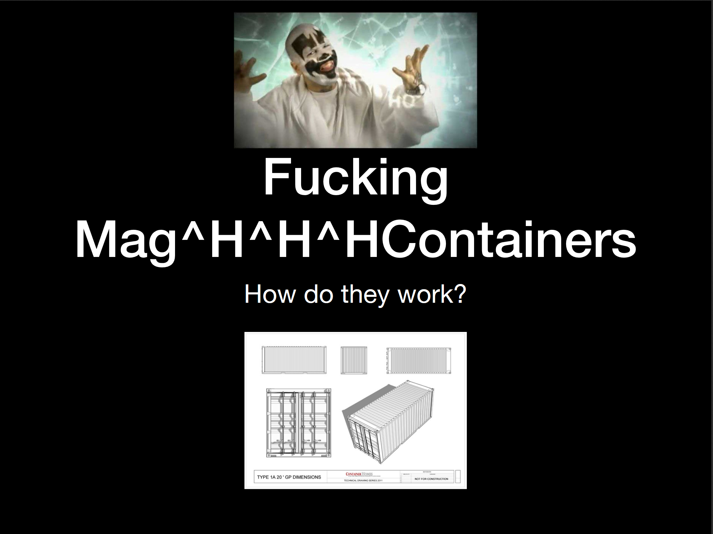
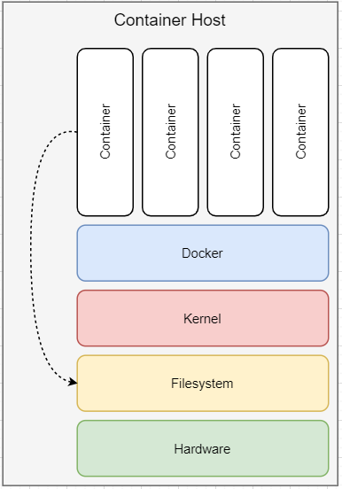
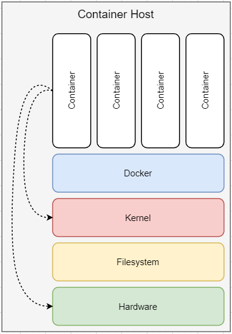
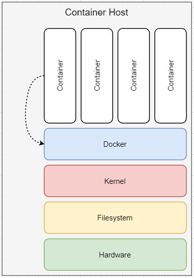
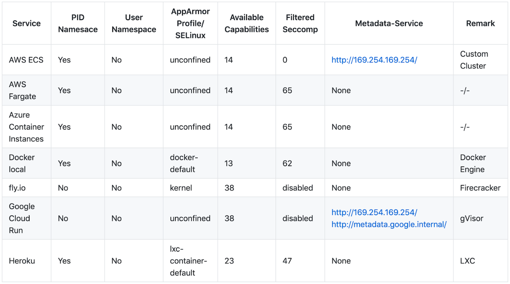
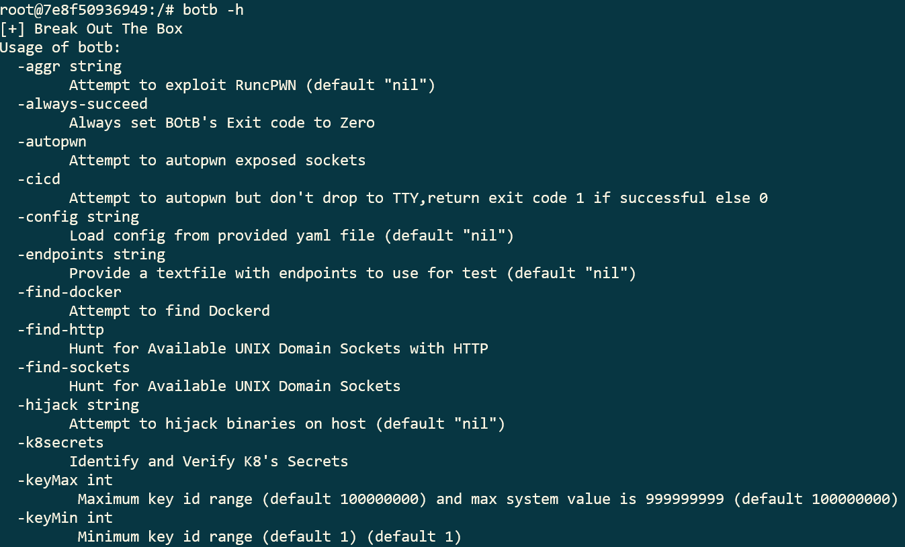

Pentesting Cloud Sandboxes in the wild
Matthias and I talked about cloud sandboxes on virtual BSides Munich 2020. This blogpost summarizes the content of the talk.
First, shout out to the BSides Munich Orga team to make the conference happen. Matthias and I were thankful to have the pleasure to contribute to the event. Furthermore, another thank you to the other speakers, who shared their research during this weird virtual-conference-times!
We started our talk with a short re-cap about containers, based on the amazing talk “Fucking Containers – how do they work?” from Andreas Krebs which was presented on BSides Munich 2019 (Ref, Slides).

After the re-cap and disclaimer, we start to go through well-known container breakout techniques. To make a long story short, we start with a root filesystem, which is accessible from a container. In that case, you have to leverage basic Linux privileges escalation techniques, by abusing services from the host system.

Afterward, we address the configuration issue, which may occur if you have access to the Linux kernel by a writable /sys directory. In that way, you can create a call-back script that is triggered if a device is plugged into the system – which can also be simulated. Next breakout would be by exploitation of the existence of the capability CAP_SYS_MODULE to load kernel modules and the capability CAP_SYS_ADMIN to leverage Linux control groups (cgroups) to get out of the box. If you have access to the devices /dev of the container host, you can go and mount the hard drive and access the root filesystem, as explained prior. And we give a quick reference to what could be done with the /proc/keys.

The last technique, which seems to be very local-docker-installation related is the container with access to the Docker socket. With access to the Docker socket, you can start further container with “super-powers”, which allows you previously explained techniques.

A detailed explanation of these attacks can be found on this blog Container Breakouts – Part 1, Container Breakouts – Part 2 and Container Breakouts – Part 3. You may now think “why do they include the Docker socket within the breakout list?”. That’s the point. Nowadays, a cloud container runtime may come in various flavors. You never know if the container is started within a Kubernetes environment or own-created orchestration layer. We will finally address the container breakout by the usage of the metadata API. The metadata API of the cloud is the control plane of the cloud, like the docker socket is the control plain of the local docker installation.
After discussing the various breakout techniques, we go through a short comparison from wide-spread cloud container runtimes. (We decided to let Kubernetes runtimes out of the comparison). The following screenshot shows the overview table.

The data is measured with botb and amicontained. All technical details can be found on Github, including the scan results of both tools.
After summarization of the attack vectors, we go through the details of how botb and amicontained can be used by you, maybe in the next assessment?

With the knowledge about the attacks, we go through the mitigation techniques that can be used to prevent breakouts and tune the security of your sandbox. Finally, a conclusion and an outline with further work close the session.
We hope that you enjoyed the session and if you are interested to discuss content, do not hesitate and get in touch.
Cheers,
–